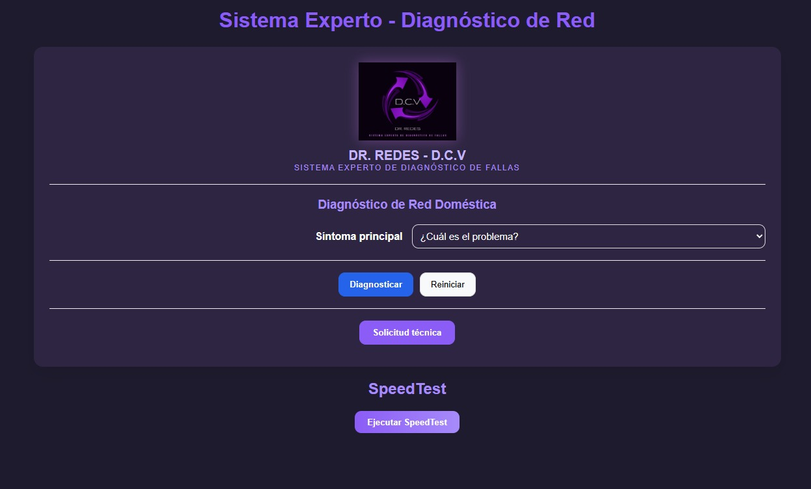

Profesor: Horacio Bogarín
Alumnos: Cristian Couto, Valeria Villegas, Diego Estrada
Desarrollar un sistema experto capaz de diagnosticar fallas comunes en redes domésticas mediante un motor de inferencia basado en reglas, complementado con inteligencia artificial local para ofrecer soluciones interpretativas en casos no cubiertos por la base de conocimiento.
Diagnostica fallas comunes en redes domésticas (corte total, Wi-Fi inestable, velocidad baja, cortes intermitentes y fallas físicas) mediante reglas predefinidas y asistencia de IA local. Incluye interacción con el usuario, pruebas de velocidad y sugerencias de solución. Funciona en entorno local, sin monitoreo en tiempo real ni integración en la nube.
Python + FastAPI
Hechos.py: Estructura los síntomas y variables observables.
MotorInferencia.py: Evalúa los hechos del usuario contra la base de reglas.
Reglas_diagnostico_red.json: Es la base del conocimiento que tiene el sistema.
SpeedTest.py: Ejecuta pruebas de conexión reales con la librería.
ChatLocalLLM.py: Permite conectar el sistema con LM Studio para respuestas por IA.
React + SpeedTest
DiagnosticoForm.jsx: permite elegir el síntoma principal y responder .
SpeedTestCard.jsx: ejecuta pruebas de velocidad y muestra resultados.
Comunicación entre frontend y backend mediante API REST (diagnosticoAPI.js y speedAPI.js).
Comentarios de Usuarios
Prioridades de fallas
Ticket de Consultas
Escalabilidad
